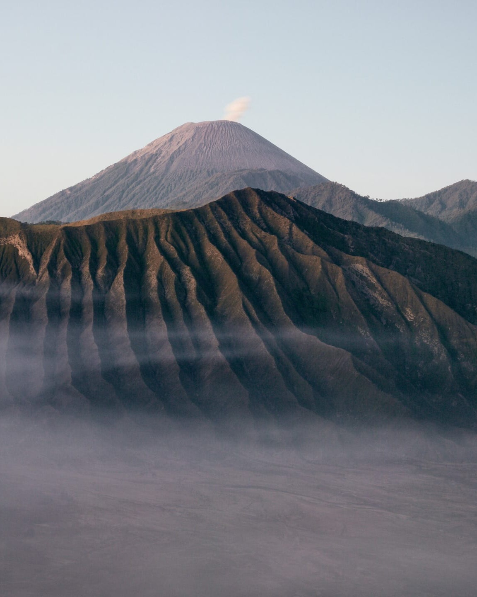
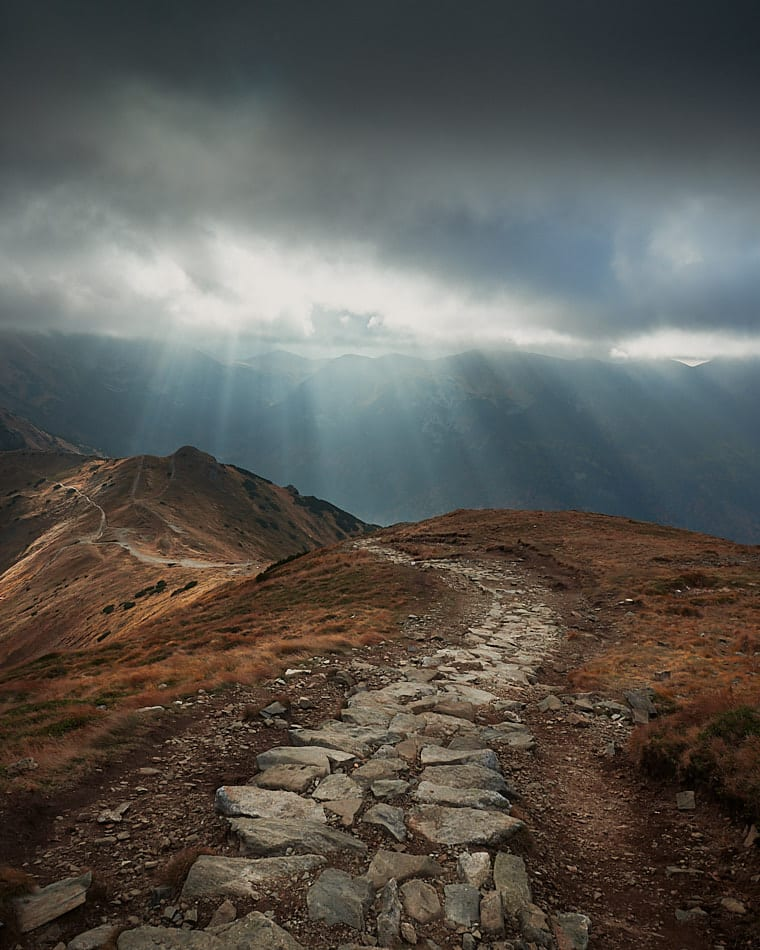
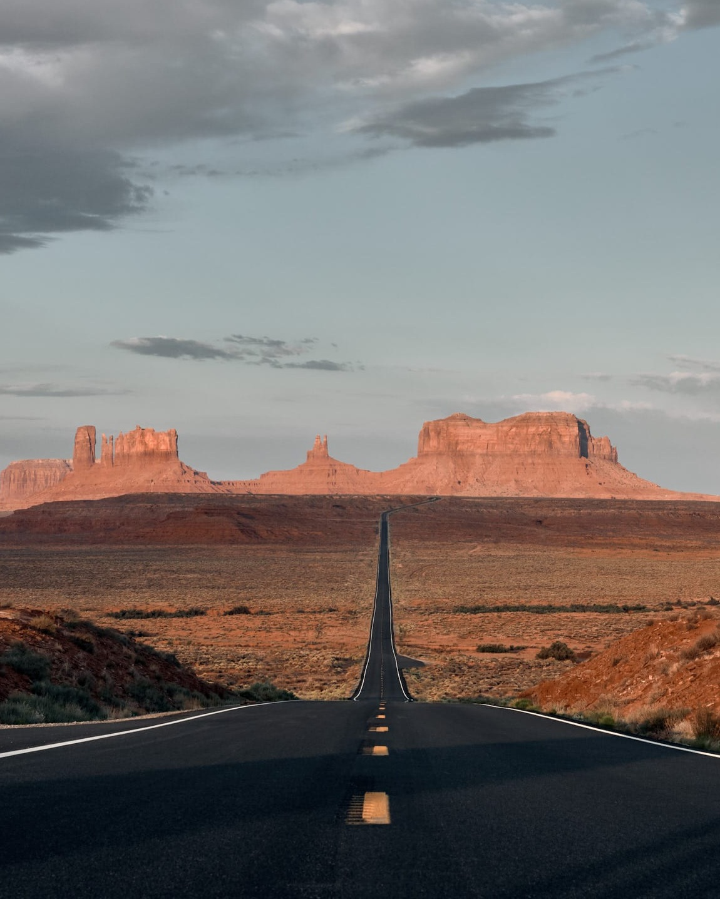

scroll down to find out more about my adventures
latest on blog
New post appear on the blog from time to time.
It's worth visiting here!
indonesia
volcanoes.
Bromo volcano is a must see on the Yogyakarta - Bali route. Seeing the magnificent sunrise on Penanjakan hill is an unforgettable experience.
READ MOREtatras adventures.
Giewont and Czerwone Wierchy are a good combination to actively spend time in the mountains. The route is very scenic and not too difficult. Giewont is the iconic peak of the Tatra Mountains, so probably everyone has already been there.
READ MOREmountain
USA
wild wild west.
You probably know Monument Valley as the Wild, Wild West. Monument Valley is gorgeous. Apparently only huge, red rocks and a desert, but they are still impressive.
READ MOREread all blog post
READ BLOGabout me

who is
myownphotostory
Hi, I'm Wioleta, and this is my blog full of colorful pictures and road stories. Travel and
photography have always been an important part of my life. I am curious about the world, I don't
like standing still.
Thanks to this, my colorful blog was created
I want to show that traveling is usually easy, and journeys do not always have to be far. I
appreciate both micro trips to the nearest forest, to the river, several-day trips to the
mountains, the sea or some crazy city break, as well as several-week trips to distant corners of
the world.
Photography is my passion and work at the same time. The world I see is transferred to colorful
frames.
I introduce my readers to issues from the world of photography, I teach the basics of
photography, I talk about equipment and processing.
"All photographs are accurate.
None of them is the truth."
— Richard Avedon
contact
Keep in touch with me
hello@myownphotostory.pl